Префектура Исикава · Вадзима · лак
Wajima Kirimoto: семья, которая двести лет работает с деревом и лаком в Вадзиме
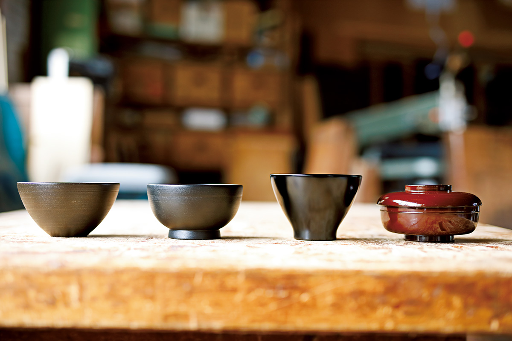
Семья Киримото больше двухсот лет работает с деревом и лаком в Вадзиме, главном городе японского лака на полуострове Ното. Её глава считает, что традиция может меняться вместе со временем.
Семья
Семь поколений дерева и лака
Вадзима стоит на северном берегу полуострова Ното, и её лаковая посуда Вадзима-нури славится прочностью на всю Японию. Семья Киримото живёт этим ремеслом с конца XVIII века. Тайити Киримото, глава мастерской Wajima Kirimoto, представляет седьмое поколение.
До четвёртого поколения семья делала и продавала лаковую посуду. В 1929 году дед Тайити, пятый в роду, перестроил дело: открыл «Киримото Моккосё», мастерскую деревянных основ. В Вадзима-нури мастера основы, кидзиси, делятся на четыре специальности, и семья выбрала хоо-кидзи: основы для вещей замысловатой формы, вроде подносов на «кошачьих лапках», чаш с носиком и кувшинчиков для сакэ.
Сам Тайити учился в университете промышленному дизайну.
«Я понял, что дизайн нужен, чтобы человеку стало легче и приятнее. Меня как током ударило. Можно ли успокаивать людей вещами из лака? С этой мысли всё и началось»
Тайити Киримото
После университета он работал в компании, которая проектировала офисы. Офисная мебель почти вся была безликой, а лака в общественных интерьерах не было вовсе. Около двадцати пяти лет от роду он вернулся в Вадзиму, прошёл ученичество в семейном ремесле хоо-кидзи и начал делать мебель и отделку интерьеров. Пригодилась и мастерская, которую построил его отец: с высокими потолками, чтобы помещались большие вещи. Умение читать чертежи, приобретённое в офисной компании, стало его сильной стороной.
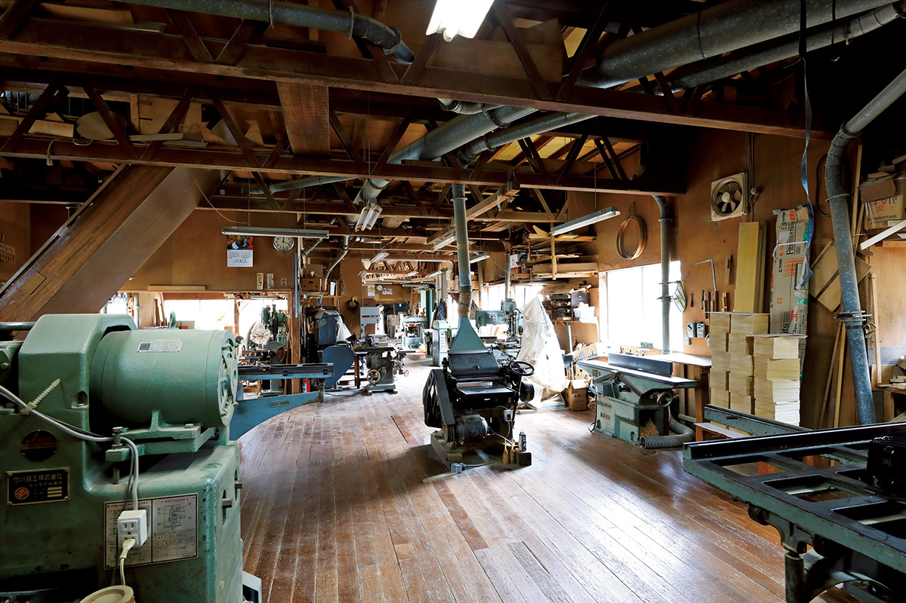
Техника
Земля Вадзимы в верхнем слое
Главная особенность Вадзима-нури это дзи-но-ко, «земляной порошок». Местный диатомит обжигают, размалывают и смешивают с лаком для грунта. Так получается твёрдый прочный слой, на котором держатся все следующие.
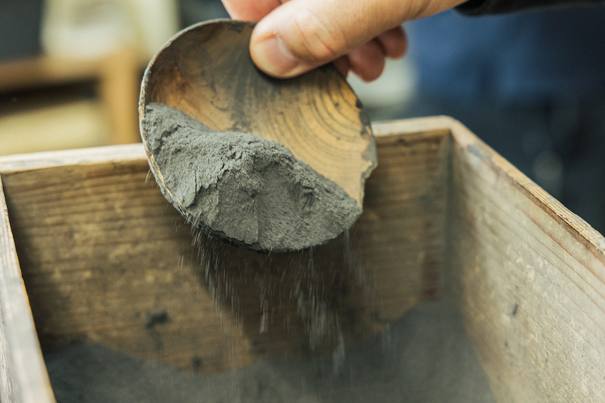
По закону о традиционных ремёслах порошок в Вадзима-нури кладут только в нижние слои. В Wajima Kirimoto его добавляют, в зависимости от вещи, и в средний, и в верхний слой.
«Когда порошок снова оказывается у самой поверхности, на ней почти не остаётся следов даже от металлического ножа или ложки»
Тайити Киримото
Так появились чаши, из которых можно есть обычными столовыми приборами. В 2019 году большая чаша с порошком в лаке и традиционная «Суги-ван» стоили по 17 600 иен, а «Сэнсудзи-яма-ван» с тонкими бороздками 16 500 иен.
Ещё один приём мастерской связан с тканью. В Вадзима-нури тонкие места основы, например край чаши, укрепляют, наклеивая на лак полоску ткани. Обычно её потом скрывают слои лака, а Wajima Kirimoto оставляет фактуру ткани и бумаги на виду.
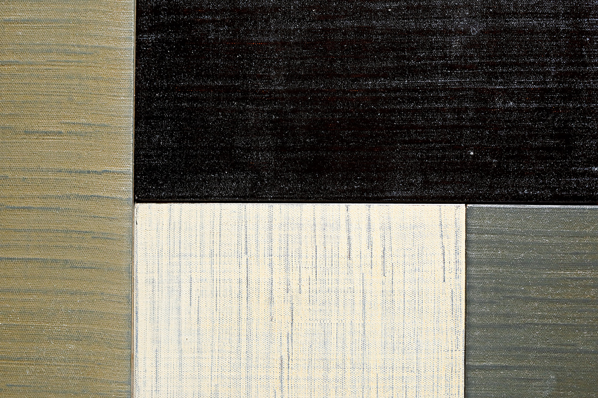
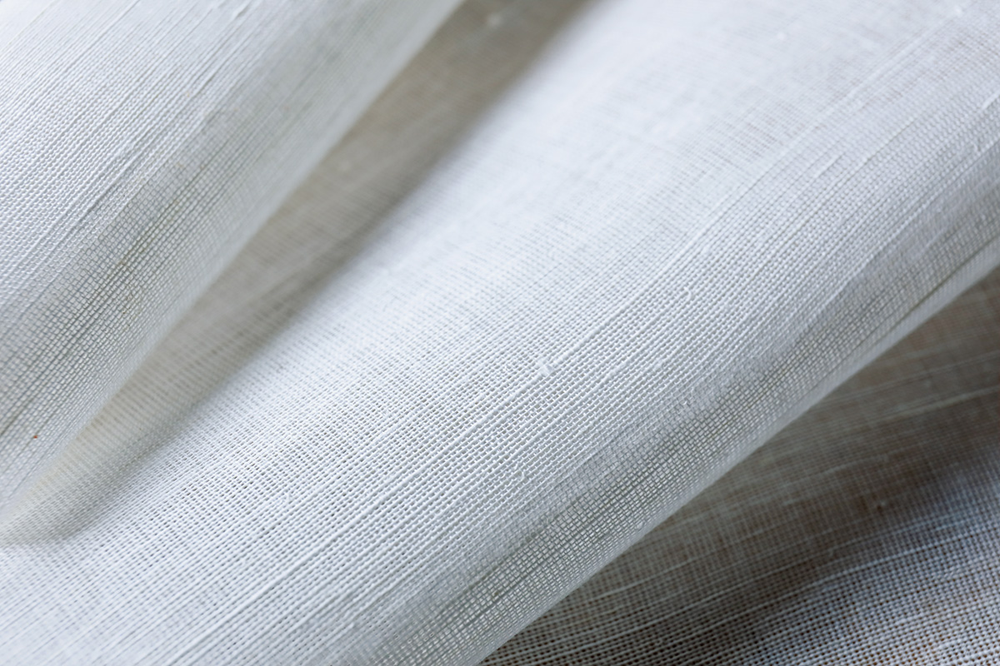
В 2019 году мастерская сделала столешницу для токийского магазина японских ремёсел. Её обтянули фирменным льняным полотном и покрыли лаком с земляным порошком. Мастерская называет этот приём «уруси-нуно-мисэ»: ткань видна сквозь лак. Рисунок льна чуть рельефный, он ловит свет, и поверхность выглядит по-разному под разным углом.
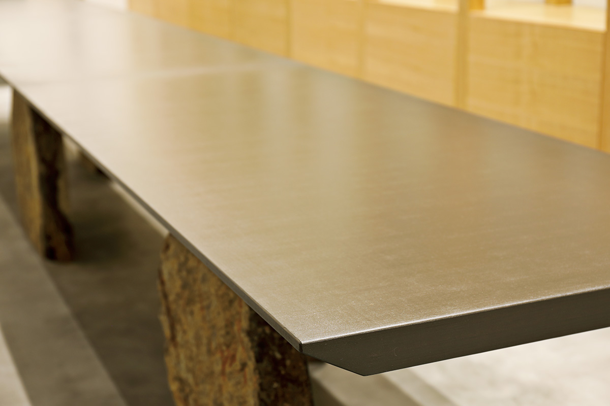
«Может быть, это и выходит за рамки "определения" Вадзима-нури. Но если "предание" повторяет всё по-старому, то "традиция" может меняться вместе со временем. Я хочу продолжать Вадзима-нури как традиционное ремесло»
Тайити Киримото
Шесть ступеней
Весь путь лака в одной стопке
Сколько работы скрыто в одной лаковой вещи, хорошо видно по набору, который в 2020 году мастера Вадзимы сделали по проекту архитектора Кэнго Кумы: шесть тарелок, каждая из которых остановлена на своей ступени, от голой деревянной основы до лака, отполированного до блеска, с одной тонкой гравированной линией. Набор стоил 495 000 иен с налогом.
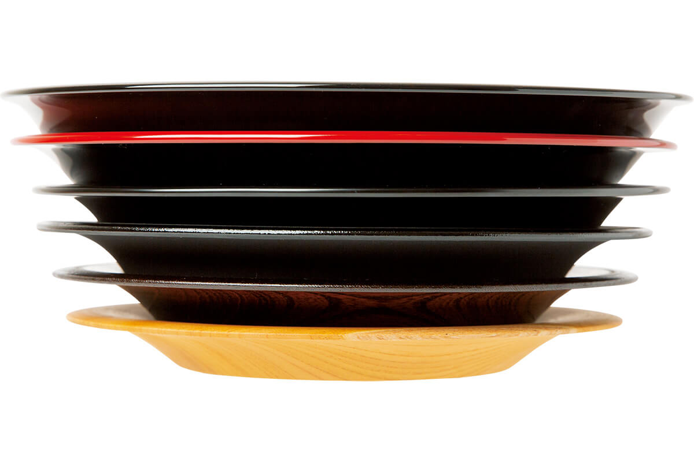
Мастера
Шестеро в одной мастерской
В 2024 году в Wajima Kirimoto вместе с Тайити работали двое мастеров основы и трое мастеров лака, нуси. Среди них есть мастер, который учился промышленному дизайну и читает чертежи, мастер починки золотом кинцуги и росписи лаком и мастер, готовый взяться за необычную отделку, какой ещё никто не видел. С этой командой мастерская выпускает вещи, которые не укладываются в привычные рамки Вадзима-нури.
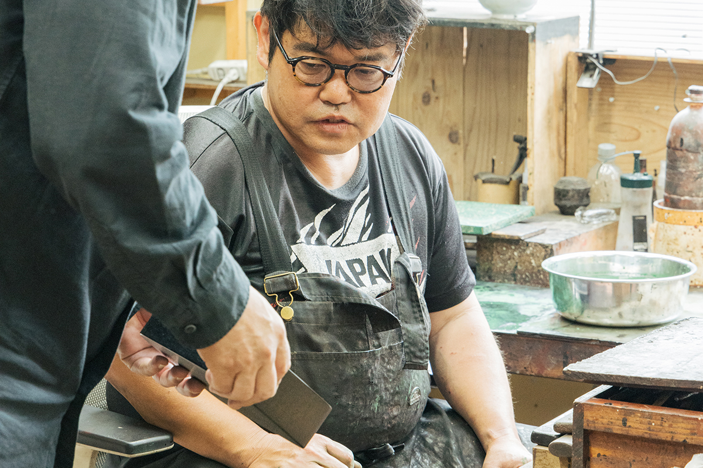
Тайити много работает с лаком в архитектуре. Его отделку можно встретить в известных отелях, ресторанах и общественных зданиях.
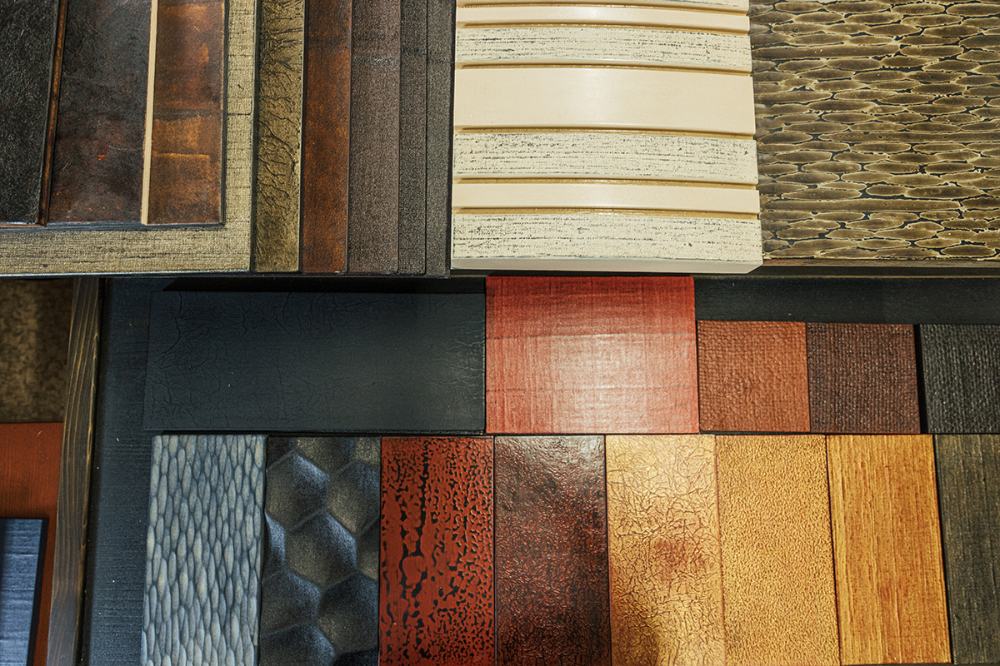
2024
Землетрясение и бумажная мастерская
1 января 2024 года землетрясение застало семью Киримото на дороге: все вместе ехали в святилище на первую в году молитву. Асфальт вспучился и потрескался, по словам Тайити, «как маффины». Потом были дожди и новые толчки, и дом рухнул полностью. Здание на торговой улице Хонмати, где семья работала с 1929 года, сгорело. Склад устоял, но внутри всё было перевёрнуто.
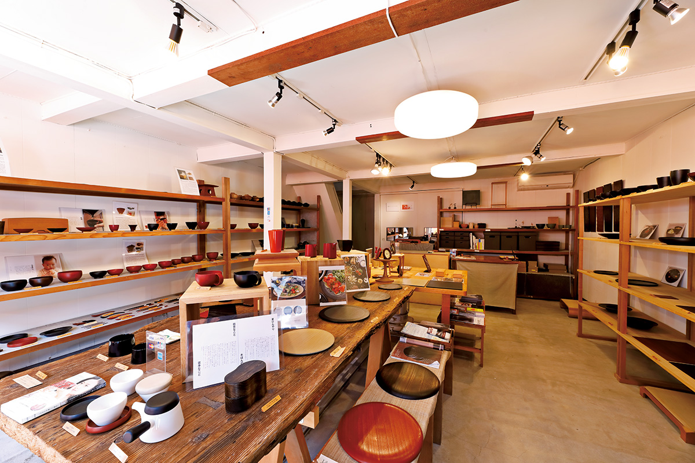
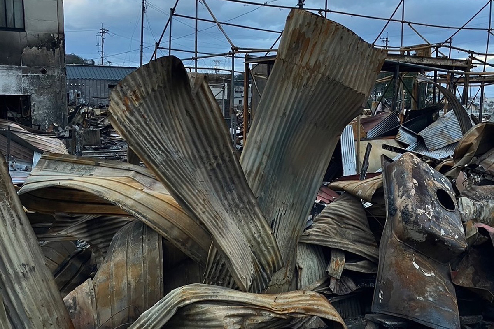
Примерно через месяц, когда всё уходило на то, чтобы просто жить, к Тайити приехал архитектор Сигэру Бан. Он привёз чертежи временного жилья из картонных труб и плит, которое совершенствовал десять лет: такой дом собирают за десяток с лишним часов. Тайити сразу понял, что из этого получится: «Бан, да это же временная мастерская!» Мастера, оставшиеся без рабочих мест, могли бы снова сесть за работу.
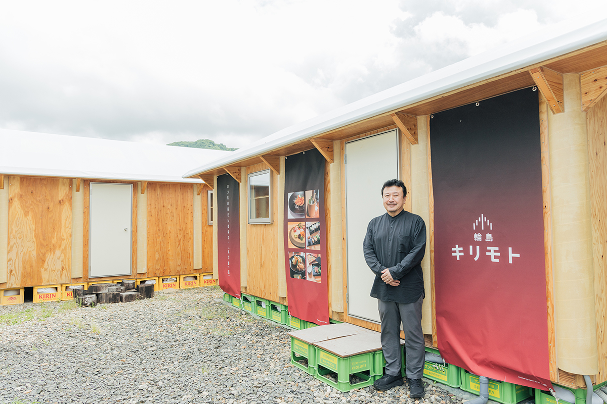
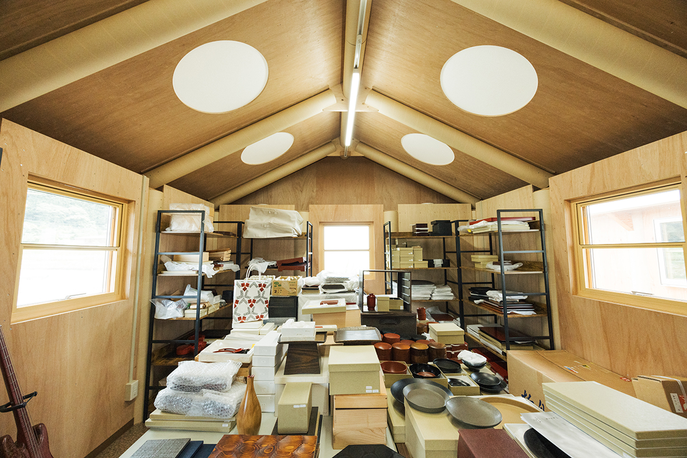
Тайити поставил две такие мастерские. Первую отдали под разбор уцелевших вещей со склада и подготовку выставок. С этого началось восстановление Вадзима-нури, но останавливаться на нём Тайити не собирался.
«Нельзя просто продавать то, что осталось на складе, и жить на поддержке. Чтобы снова начать делать вещи, всей Вадзиме нужно работать вместе»
Тайити Киримото
Испытания на этом не кончились. В сентябре 2024 года ливни затопили новую мастерскую. Магазин и «Студия лака» при мастерской открылись снова 12 июля 2026 года, через два с половиной года после землетрясения.
Второе рождение
Посуда, тридцать лет пролежавшая в кладовой
В 2024 году Тайити получил неожиданную находку. В кладовой семьи его школьного товарища, тоже пострадавшей от землетрясения, около тридцати лет пролежала целая партия лаковой посуды, доведённой до среднего слоя: маленькие ярусные шкатулки, чаши с крышкой, плоские тарелки, блюда для сладостей на ножке. Тайити выбрал формы, которые подходят современному дому, и для каждой придумал свою отделку: фактуру ткани и бумаги, жемчужно-серебристый лак. Так традиционные формы Вадзима-нури получили новую жизнь, а серию назвали «Возрождённая лаковая посуда».
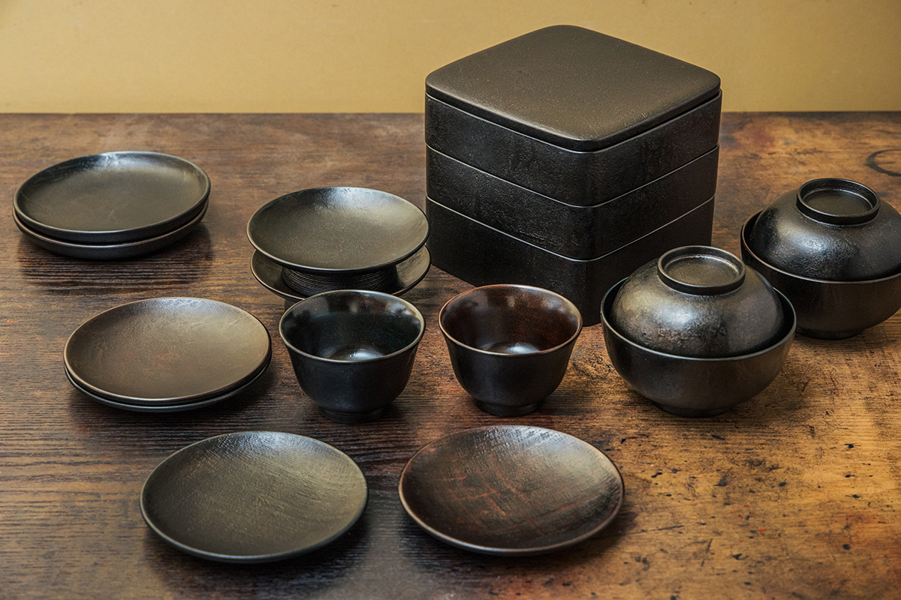
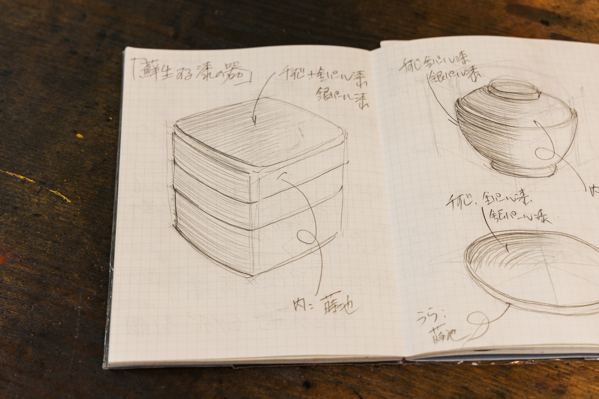
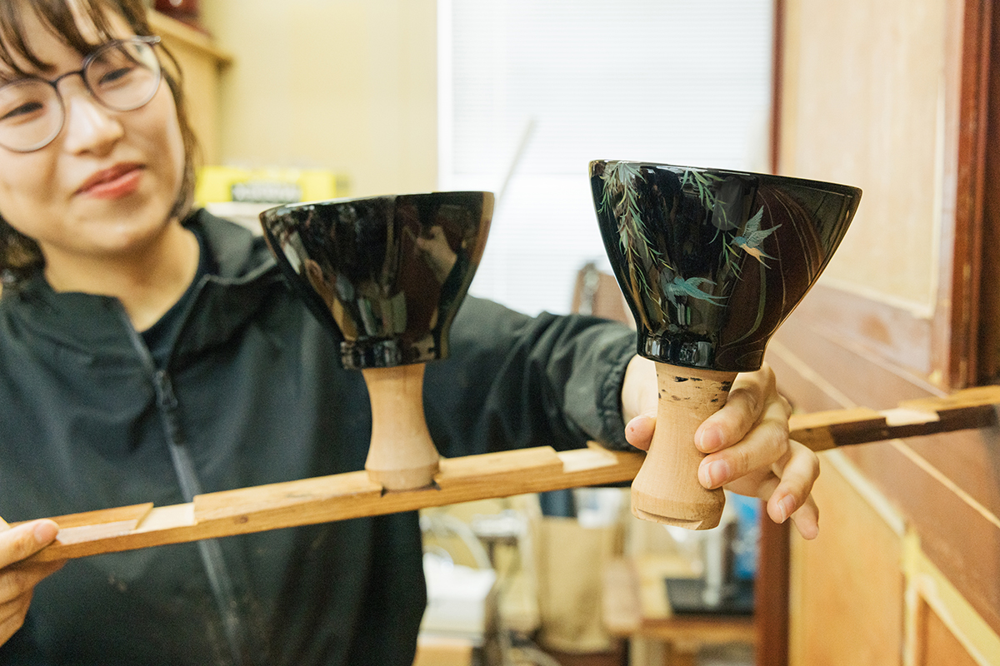
«С помощью Бана мы смогли наладить работу так, чтобы Вадзима-нури продолжалась. Дальше следующий этап. Я хочу, чтобы лаковые интерьеры, мебель и посуда пришли в сегодняшнюю столовую. Этот поиск не кончится никогда»
Тайити Киримото
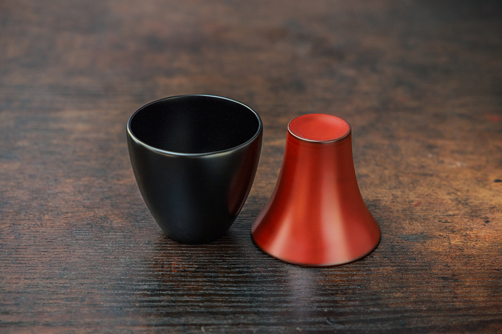
Wajima Kirimoto, мастерская и «Студия лака»
- Адрес
- префектура Исикава, Вадзима, Сугихира-мати, Охякугари, 70-5
- Телефон
- +81 768-22-0842
- Часы работы
- будни 9:00–17:00 (экскурсия по мастерской по записи, платная); выходные и праздники 10:00–16:00 (только магазин)
- Выходные
- летние каникулы, новогодние праздники, бывают внеплановые
- Сайт
- kirimoto.net
Фото: Норихито Судзуки, Майко Фукуи, Кадзуя Хаяси, Дзиро Отани.